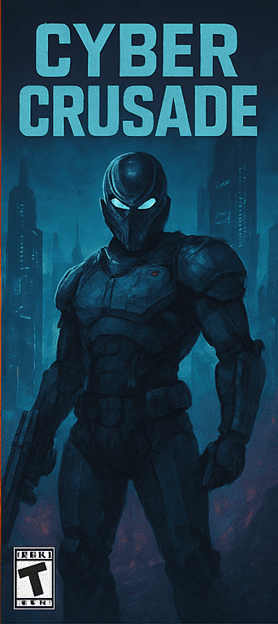
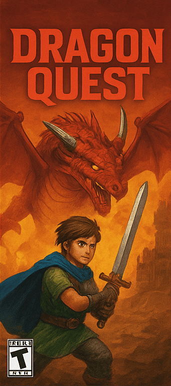
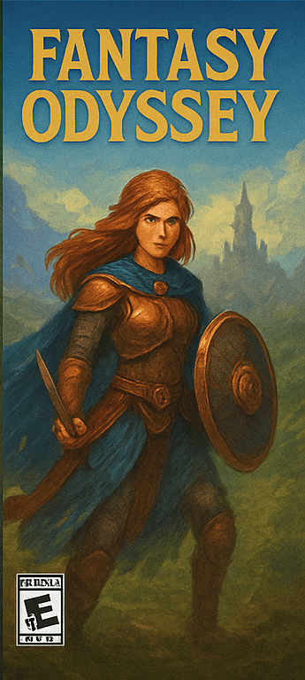
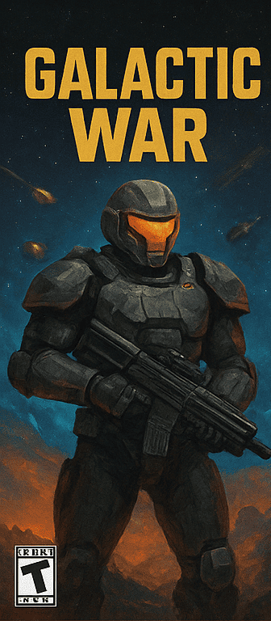
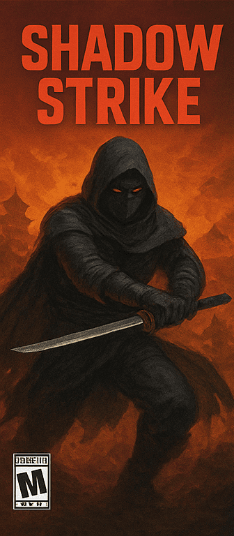
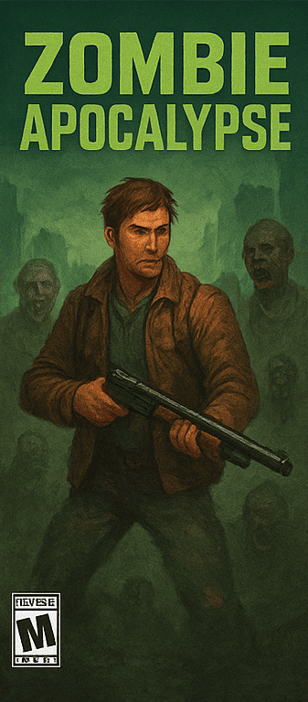

Catálogo seleccionado:
-

Cyber crusade
La ciudad de Neo-Eclipse es controlada por megacorporaciones corruptas. Encarnas a un guerrero cibernético que se infiltra en las zonas más peligrosas para liberar a la población y descubrir la verdad detrás de un experimento que amenaza la conciencia humana misma.
- Historia: 7/10
- Jugabilidad: 9/10
- Arte/Diseño: 9/10
-

Dragon Quest
Eres un joven aprendiz de héroe que debe enfrentar al dragón ancestral que amenaza con despertar una fuerza oscura. Viaja por bosques encantados, templos en ruinas y aldeas mágicas mientras aprendes nuevas habilidades, forjas alianzas y descubres tu destino.
- Historia: 8/10
- Jugabilidad: 7/10
- Arte/Diseño: 8.5/10
-

Fantasy Odyssey
Eres una joven guerrera destinada a detener un cataclismo mágico que amenaza con fracturar el reino. Administra estadísticas, mejora tu equipo y forma un grupo de compañeros mientras recorres un mundo vibrante lleno de criaturas míticas y antiguas ruinas.
- Historia: 8.5/10
- Jugabilidad: 8/10
- Arte/Diseño: 9/10
-

Galactic War
En un futuro donde la humanidad lucha contra una coalición alienígena tecnológicamente superior, tomas el papel de un soldado de élite equipado con armadura táctica avanzada. Explora planetas devastados, bases espaciales abandonadas y naves colosales mientras descubres una conspiración que podría acabar con la guerra… o destruir a toda la galaxia.
- Historia: 7.5/10
- Jugabilidad: 8.5/10
- Arte/Diseño: 8/10
-

Shadow Strike
Un asesino encapuchado lucha contra una orden secreta que controla imperios desde las sombras. Usa sigilo, trampas y armas silenciosas para infiltrarte en fortalezas, monasterios y ciudades amuralladas. Cada misión permite diferentes rutas y estrategias.
- Historia: 7.5/10
- Jugabilidad: 8.5/10
- Arte/Diseño: 8/10
-

Zombie Apocalypse
Un brote viral ha arrasado el mundo. Juegas como un superviviente endurecido que debe buscar recursos, rescatar civiles y encontrar una cura mientras hordas de infectados invaden cada zona. Incluye crafting, exploración libre y un sistema de moral que afecta las decisiones.
- Historia: 6.5/10
- Jugabilidad: 8/10
- Arte/Diseño: 7.5/10